Synchronet's FidoNet Packet Tosser Documentation
Table of Contents
Introduction
Terminology
Installation
AREAS.BBS Format
Configuration
Running SBBSecho
Command Line Switches
Area Manager Remote Commands
SBBSecho is a full-blown FTN echomail program (tosser/scanner) for Synchronet
BBS version 2.0 and higher. SBBSecho is level III implementation of the SMB
v2.00 specification including support for HyperAllocated and LZH compressed
message bases.
It is intended to replace FTSC-1 (*.MSG) compatible echomail programs (GEcho,
Squish, FastEcho, Alexi/Mail, etc.) and SBBSFIDO with a single program
incorporating the standard features of echomail programs without the .MSG
phase (consuming disk space and time).
You will not need to use SBBSFIDO (*.MSG import/export utility for Synchronet)
or any echomail programs after you have installed SBBSecho.
Back to Table of Contents
FTN
FidoNet Technology Network: Any network using FidoNet standards for addressing,
mail packets, mail sessions, node lists, etc.
Zones, Nets, Nodes, and Points?
FTN node addresses are like phone numbers, they are made up of multiple
components (four to be exact). The components are: zone, net, node, and point.
Each component is specified by a decimal (base-10) number, separated by symbols
(no spaces):
Zone:Net/Node.Point
The zone represents the continent (if FidoNet) or the network number (if other
FTN network). All FidoNet nodes in North America have a zone 1 address. When
the zone is specified in an address, it is the first component and must be
followed by a colon. If the zone is not present in an address, the local
system's zone is assumed.
The net represents the network number of the FTN node. Duplicate net numbers
may exist between zones. If the net number is not present, the local system's
net is assumed.
The node number specifies an exact FTN node within a network. The node number
is the only required element of an FTN node address.
The point is an optional component which specifies a sub-node that does not
directly receive mail and is also not listed in the main FTN node list, but
instead gets all its mail from its boss-node (zone:net/node.0). When the point
is not specified, 0 (zero) is assumed (i.e. 1:2/3 and 1:2/3.0 are identical)
which indicates the system is not a point node address.
A 2D (2 dimensional) address refers to an FTN address containing just the
net and node numbers (i.e. 103/705).
A 3D (3 dimensional) address refers to an FTN address containing the zone,
net, and node numbers (i.e. 1:103/705), specifically excluding the point number
if it exists.
A 4D (4 dimensional) address refers to an FTN address containing the zone,
net, node, and optional point numbers (i.e. 1:103/705.1).
A 5D (5 dimensional) address refers to an FTN address consisting of a standard
3D or 4D address with an appended "@domain" (i.e. 1:103/705@fidonet.org).
Attach or FLO Mailer?
If you are using FrontDoor, InterMail, D'bridge, SEAdog, Dutchie, or any other
ArcMail *.MSG attach-style mailer, you are using what we will refer to as an
"Attach Mailer".
If you are using BinkleyTerm, Portal of Power, or any other FLO/CLO/HLO/DLO
style mailer, you are using what we will refer to as a "FLO Mailer".
Both types are supported equally by SBBSecho.
NetMail
Point-to-point (usually person-to-person) direct or routed messages.
EchoMail
Group or conference messages of a particular subject matter. Usually
distributed on a regional or continental (e.g. FidoNet Zone 1 backbone) scale.
FTN style echomail areas have a unique area tag (name) associated with them to
distinguish each area from the others.
Packet
An FTN packet is a group of one or more messages contained in a single
uncompressed file. Packets may contain echomail and/or netmail messages.
Packets usually have a .PKT extension, although outbound NetMail packets for
FLO Mailers will have .?UT extensions (where ? is either O, C, D, or H). The
first eight characters of the filename may be anything, but are usually decimal
digits representing the date and time the packet was created. SBBSecho creates
temporary outbound packet files with a .PK_ extension and then renames them to
.PKT when they're completed. If you find any .PK_ files in your outbound
directory, don't worry. SBBSecho will find them the next time it is run and
continue packing them and sending them on their way.
Bundle
An FTN bundle is a single file archive of one or more (usually compressed)
packets. Bundles will have file extensions where the first two characters
represent the day of the week the bundle was created (MO, TU, WE, TH, FR, SA,
and SU) and the third character of the extension is a number or letter. The
first eight characters of the filename may be anything, but are usually
hexadecimal digits representing the FTN node address (or relative address) of
the system that created the bundle. SBBSecho changes the file extension of bad
inbound bundles to .MO_, .MO-, or .MO.
Areafix/Area Manager
Areafix is a synonym for area manager (the very first FTN area manager
program was called AreaFix). Area manager capabilities (remote adding/removing
of areas, changing compression type, etc) are built into SBBSecho, so therefore
no external area manager program is required. If you are not an FTN hub, then
the area manager portion of SBBSecho will probably not get any use on your
system.
Back to Table of Contents
To begin, copy the SBBSECHO.EXE, ECHOCFG.EXE, and AREAMGR.HLP files into your
Synchronet EXEC directory (usually C:\SBBS\EXEC), copy the SBBSECHO.CFG file
into your Synchronet CTRL directory (usually C:\SBBS\CTRL), and copy the
SBBSECHO.DOC file into your Synchronet DOCS directory (usually C:\SBBS\DOCS).
If you plan on using the 32-bit DOS, OS/2, or Windows 95/NT version of
SBBSecho, you will need to put the appropriate SBBSECHO.EXE file into your
Synchronet EXEC directory (unzip OS2.ZIP for the OS/2 version, DOS4G.ZIP for
the 32-bit DOS version, or WIN32.ZIP for the Windows 95/NT version). If
you get memory allocation errors running the 16-bit DOS version or desire
improved performance, you will want to run one of the 32-bit versions.
Add the SBBSCTRL and SBBSNODE environment variables to your AUTOEXEC.BAT.
Example:
SET SBBSCTRL=C:\SBBS\CTRL
SET SBBSNODE=C:\SBBS\NODE1
Note: The node number used for the SBBSNODE environment variable is not
important, use your NODE1 directory.
These environment variables must be present for SBBSECHO and ECHOCFG to
function correctly. Type "SET" at the DOS prompt to be sure they are listed
correctly.
You will also need to modify your existing MAILER.BAT (or FDRUN.BAT, IMRUN.BAT,
etc) file to accomodate the use of SBBSecho, or replace it with the MAILER.BAT
included with SBBSecho. If this is your first time setting up FidoNet, you will
not currently have a MAILER.BAT file set up, so use the one that is included
and modify it so that it reflects the proper drive letters and directories.
Next, SBBSecho expects to find the file AREAS.BBS in your Synchronet DATA
directory (usually C:\SBBS\DATA) unless you have overridden the default name
and/or location using the ECHOCFG program. The format of this file is very
similar to the standard AREAS.BBS (which many echomail programs use, or can
at least export their native area file to this format - i.e. GEcho's GSETUP).
SCFG can also export your sub-boards to AREAS.BBS, but you're probably better
off modifying the AREAS.BBS file you're already using (if you are) or
converting your current echomail program's area file to AREAS.BBS. This is
because SCFG assumes the sub-board short name will be the same as the area's
tag (as shown in your echo list), but this may not always be the case - unless
you imported an AREAS.BBS or FIDONET.NA file into SCFG to begin with).
Back to Table of Contents
Lines beginning with a semicolon (;) are considered comments, and are ignored.
Each line is in the following format:
CODE TAG UPLINKS
Where:
CODE is the internal code of the sub-board. Any unrecognized internal
codes are considered "Passthru" (not imported to your BBS).
TAG is the FidoNet tag as shown in your echo list (i.e. FIDONET.NA).
If this is '*', then it will be considered a "badecho" area
and will receive all messages for areas not otherwise specified
in this file.
UPLINKS is a list of FidoNet addresses which you wish to export mail
to. At the very least, your hub's address should be listed
here. Your address should NOT be listed here. If multiple
addresses are specified, you should specify the full 3D address
for each.
AREAS.BBS Example:
SBBS SYNCHRONET 1:3615/50
SYNCDATA SYNCDATA 1:3615/50
SYNC_SYS SYNC_SYSOPS 1:3615/50
The amount of spacing between each element in the line is not important. Each
line can be up to 1000 characters in length.
So if your OLD AREAS.BBS file is in .MSG format (for example):
C:\FD\ECHO\SBBS SYNCHRONET 1:3615/50
It must be changed to match the example given above!
Back to Table of Contents
In order to set up SBBSecho for your system you must run the included ECHOCFG
program. It should already be located in your EXEC directory. You may want to
put your EXEC directory in your DOS search path so you can execute SBBSECHO and
ECHOCFG from any drive and directory on your system.
Multiple configuration files can be used (but isn't usually required) for
multi-mailer systems. The default configuration filename is SBBSECHO.CFG
located in your Synchronet CTRL directory. You can override this by specifying
the name and location of the configuration file on the SBBSECHO and ECHOCFG
command lines. Example:
ECHOCFG D:\ECHO1.CFG
SBBSECHO D:\ECHO1.CFG
If you do not specify a configuration file, ECHOCFG and SBBSECHO will use
SBBSECHO.CFG located in your Synchronet CTRL directory.
Upon running ECHOCFG you will be brought to the main menu of the configuration
program. The path and filename of the configuration file being modified will
appear at the top of the menu. Following are screen captures of available menus
within the configuration program and an explanation of the options contained on
each of them.
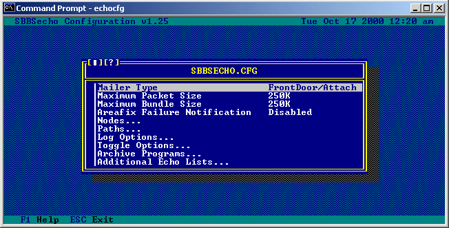
Mailer Type:
Selecting this option will toggle between the mailer types supported
by SBBSecho, either FrontDoor (message attach) type mailers or Binkley
(FLO file) type mailers. Choose the one that matches your front-end
mailer type.
Maximum Packet Size:
This option allows you to set the maximum size of each outgoing
echomail packet.
Maximum Bundle Size:
Mail packets are normally packed into what are called "bundles" (unless
a node is set up to receive uncompressed mail packets). This option
allows you to specify the maximum size of each outgoing mail bundle.
Areafix Failure Notification:
This is the user number of the person where notification of Areafix
failures should be sent. Such failures include nodes which are not
configured for areafix, nodes using incorrect areafix passwords, and
the like. Setting this to 0 will disable this option.
Nodes...
This option allows you to add, remove, and configure nodes that you
will be sending mail to. Selecting this option will bring you to
a sub-menu which will look similar to the following:
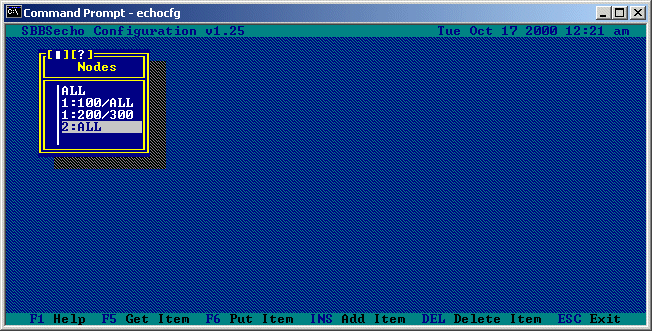
At the Nodes... sub-menu, pressing the INSert key will allow you to
add a new node, pressing the DELete key will remove the currently
highlighted node number, and pressing ENTER on the currently
highlighted node will allow you to edit the options for that particular
node from a menu like the following (note that the node number you are
editing appears at the top of the window):
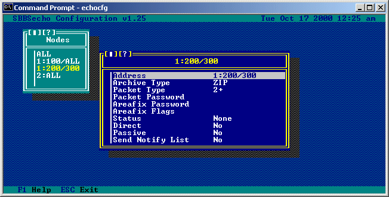
Address:
This is the address of the node you are editing, selecting it
will allow you to change this to a different address. Using
the "ALL" wildcard in place of one of the address components
will allow you to configure settings for all nodes that meet
that specication (e.g. all nodes in zone 1 can be specified
as 1:ALL or all nodes in zone 1, net 103 can be specified
as 1:103/ALL).
Archive Type:
This is the compression type to be used when packing mail
bundles for this node. Selecting this option will allow you
to choose from a menu of currently configured archive types,
like the following:
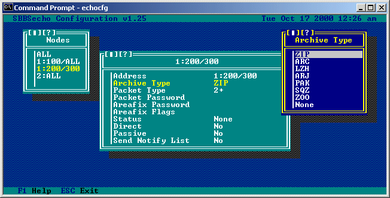
Selecting "None" will specify that this node is to receive
uncompressed packets (no bundles).
Packet Type:
This is the packet type that will be used when creating mail
packets for this node. The default packet type used by SBBSecho
is 2+. If you are a "point" address (e.g. 1:100/100.1) you
should use either a type 2+ or 2.2 packet since type 2 packets
do not support point numbers. Selecting this option will allow
you to choose from a menu of currently supported packet types:
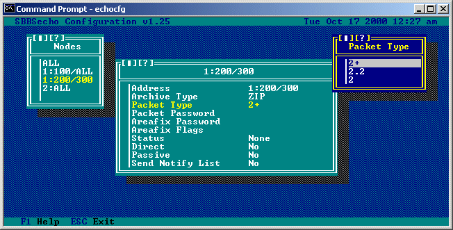
Packet Password:
This is a password that will be placed into each outgoing mail
packet for this node. Passwords are normally used for extra
security when sending and receiving mail packets. This node
must also have the same packet password defined for your
address and SBBSecho must be set up for secure operation (set
in the 'Toggle Options' sub-menu) in order for this feature to
function properly.
Areafix Password:
This is the password that will be required by this node (in
the subject field) when it sends messages to the area manager
(AreaFix).
Areafix Flags:
When additional echo lists have been defined (from the
'Additional Echo Lists...' sub-menu) these flags determine
which echo lists can be used by this node when processing area
manager add requests.
Status:
This option determines the netmail status that will be set
when SBBSecho sends out an areafix message or a file attach.
Selecting this option toggles between None, Crash, and Hold
status.
Direct:
When set to 'Yes' this option will add a Direct kludge line
to messages that SBBSecho sends out (or create DLO/DUT files
for FLO mailers).
Passive:
Setting this option to 'Yes' will prevent messages from being
sent to this node without the need for altering the AREAS.BBS
file. This is useful for temporarily shutting off the messages
to this node. This option can be toggled on and off remotely
via an area manager request.
Send Notify List:
This determines whether or not this node is sent a Notify List
when using that command line option in SBBSecho.
A Notify List is a netmail sent to the system operator of the
node showing options set for the node as well as connected
areas.
Paths...
This option allows you to configure the paths and filenames which are
used by SBBSecho. Selecting this option will bring you to the
following sub-menu:
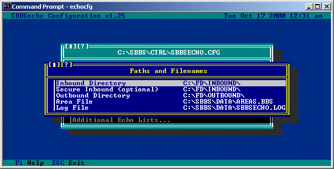
Inbound Directory:
This is the directory where SBBSecho should look for inbound
mail packets. This is normally taken from whatever has been
set in the SCFG program.
Secure Inbound (optional):
This is an optional directory where SBBSecho should look for
secure inbound mail packets.
Outbound Directory:
This is the directory where SBBSecho will place outgoing mail
packets and bundles.
Area File:
This is the path and filename of the file that SBBSecho will
use as it's AREAS.BBS file. By default SBBSecho looks for
the file AREAS.BBS in the data directory defined in SCFG.
Log File:
This is the path and filename of the file that SBBSecho will
use when logging events. By default SBBSecho uses the file
SBBSECHO.LOG in the data directory defined in SCFG.
Log Options...
This list allows you to toggle what events SBBSecho should place into
the logfile. Selecting this option will bring you to the following
sub-menu:
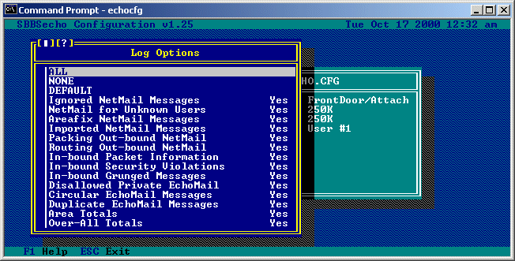
Selecting ALL, NONE, or DEFAULT will toggle all of the options to
'Yes', 'No', or to their default states, respectively.
Toggle Options...
These options allow you to toggle various features in SBBSecho.
Selecting this option will bring you to the following sub-menu:
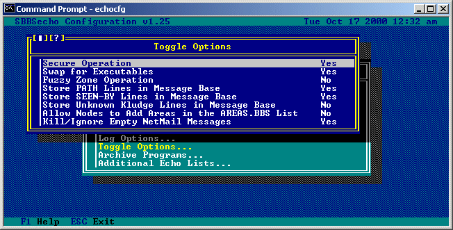
Secure Operation:
When set to 'Yes', SBBSecho will compare the origin of any
incoming mail packets to the nodes in the AREAS.BBS file
as messages are imported. If a packet password has been
defined for that node, it will also be compared to the
password contained in the mail packet. Packets and messages
failing this security will not be imported.
Swap for Executables:
SBBSecho relies on external executable programs for extracting
and compressing mail bundles. This option tells SBBSecho to
swap out of memory when running any of these executables,
giving the executable programs more free memory to run in.
This option is only used in the 16-bit DOS flavor of SBBSecho.
Fuzzy Zone Operation:
Some mail programs do not create netmail messages with zone
information (INTL kludge line) or may only do so when sending
between zones. This is a problem for systems that receive
netmail for multiple addresses with different zones (AKAs with
different zone numbers). Setting this option to "Yes" allows
SBBSecho to guess what the correct originating and destination
zone is based on the net and node portions of the destination
address in netmail message.
Store PATH Lines in Message Base:
When set to 'Yes', SBBSecho will store the PATH lines from
incoming echomail in the Synchronet message base headers (not
the body text). This option is useful for troubleshooting
routing/duplicate message problems.
Store SEEN-BY Lines in Message Base:
When set to 'Yes', SBBSecho will store the SEEN-BY lines from
incoming echomail in the Synchronet message base headers (not
the body text). This option is useful for troubleshooting
routing/duplicate message problems.
Store Unknown Kludge Lines in Message Base:
When set to 'Yes', SBBSecho will store any unknown kludge lines
from incoming echomail in the Synchronet message base headers.
This option is useful for troubleshooting problems.
Allow Nodes to Add Areas in the AREAS.BBS List:
When set to 'Yes', SBBSecho will allow nodes to add areas
(via area manager) which are listed in the AREAS.BBS list.
When set to 'No', SBBSecho will only allow nodes to add areas
from any additionally configured echo lists which they have
access to.
Archive Programs...
This option allows you to add or remove archive programs from SBBSecho.
Selecting this option will bring you to the following menu:
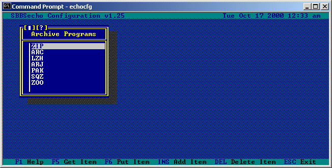
At the Archive Programs... sub-menu, pressing the INSert key will allow
you to add a new archive program. Pressing the DELete key will remove
the currently highlighted archive program. And pressing ENTER on the
currently highlighted archive program will allow you to edit the
options for that particular prgram from a menu like the following (note
that the name of the archive program you are editing appears at the top
of the window):
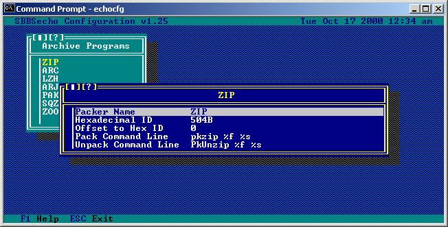
Packer Name:
This is the name that will be used to reference this particular
archiving program. This is also the name that should be used
by nodes using areamanger to change their compression type
remotely.
Hexadecimal ID:
This is a hexadecimal identifier that SBBSecho should look for
when determining the compression type used on incoming bundles.
In this example we are looking for the ID 'PK', '50' is the
hexadecimal value for the letter 'P' and '4B' is the
hexadecimal value for the letter 'K'.
Offset to Hex ID:
This is the byte offset (from the beginning of the file) where
the hexadecimal ID for this archive program can be located.
In this example we are looking at an offset of 0 bytes from the
beginning of the file.
Pack Command Line:
This is the command line used by this archiving program for
compressing files. The '%f' command line specifier will expand
to the name of the compressed file, the '%s' command line
specifier will expand to the name of the file being compressed.
Unpack Command Line:
This is the command line used by the archiving program for
UNcompressing files. The '%f' command line specifier will
expand to the name of the compressed file, the '%s' command
line specifier will expand to the path where the file is
being extracted to.
Additional Echo Lists...
This option allows you to add and remove additional echo lists which
can be used by SBBSecho for area manager add requests. Normally these
will be used in addition to your AREAS.BBS file. If you have the
toggle option 'Allow Nodes to Add Areas in the AREAS.BBS List' set to
'No', you MUST create at least one additional echo list if you wish
to allow other nodes to add areas via area manager requests.
Selecting this option will bring you to a sub-menu listing any
additional echo lists you currently have defined:
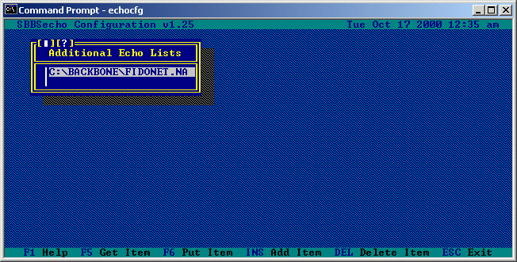
Pressing the INSert key will allow you to add a new echo list, pressing
the DELete key will remove the currently highlighted echo list, and
pressing ENTER on the currently highlighted echo list will allow you to
edit information about that list:

Echo List Path/Name:
This is the full path and filename of the echo list you are
defining. This list should contain the areatag names of areas,
one per line, with any comments seperated from the areatag by
at least one space.
Hub Address:
This is the address of the hub of the conferences contained
in this list. If an area is remotely added from this list
(using Areafix) this address is automatically added to the
AREAS.BBS file.
Forward Password:
This is the area manager password to use when forwarding
requests.
Forward Requests:
Setting this option to 'Yes' will cause SBBSecho to send a
request to the Hub Address specified to turn on an area from
this list. This happens when users remotely add areas using
Areafix and is not necessary if you are already receiving the
conferences in this list (ie: from Planet Connect).
Echo List Flags:
These are the flags required for a node to be able to gain
access to this particular echo list. These flags are defined
for each node from the 'Nodes...' sub-menu.
Selecting this option will bring you to a sub-menu where you
may add and remove flags for this echo list.
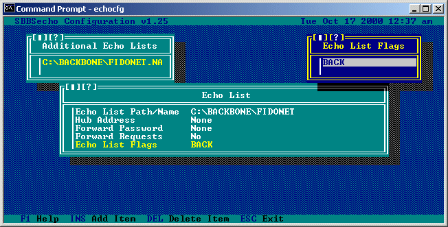
Back to Table of Contents
The command line for executing SBBSECHO is very similar to SBBSFIDO, although
some command line switches have been eliminated.
We suggest you use the following command lines:
For importing:
C:\SBBS\EXEC\SBBSECHO /LES!
For exporting (Attach Mailer):
C:\SBBS\EXEC\SBBSECHO /LIN
For exporting (FLO Mailer):
C:\SBBS\EXEC\SBBSECHO /LINF
Remove all references to SBBSFIDO from your batch files (if you have any).
See the included MAILER.BAT as an example.
Back to Table of Contents
usage: sbbsecho [cfg_file] [/switches] [sub_code]
where: cfg_file is the filename of config file (default is ctrl\sbbsecho.cfg)
sub_code is the internal code for a sub-board (default is ALL subs)
SBBSecho will execute normally (for Attach Mailer operation) with NO command
line switches required. Command lines switches are used to cause SBBSecho to
_do_ or _not_ do specific operations. When used, command line switches
are prepended by a slash (/) character. Multiple switches can be specified
in one grouping (multiple /switch sets are supported, but not required).
Switch letters are not case sensitive. The available switch letters and their
descriptions are:
P: Do not import inbound packets or extract inbound bundles
X: Do not delete inbound packets (*.PKT) after they're imported
N: Do not import inbound netmail (packetized netmail and *.MSG)
D: Do not delete inbound netmail (*.MSG) after they're imported
I: Do not import inbound echomail
E: Do not export outbound echomail
M: Ignore echomail pointers (export all locally created echomail messages)
U: Update echomail pointers only (export no echomail messages)
T: Do not update echomail pointers (test export)
H: Export all echomail messages (including messages imported from FidoNet)
J: Ignore recieved bit on netmail (import even though flagged as received)
L: Create log file (data\sbbsecho.log)
R: Create report of import totals (text\sbbsecho.msg)
B: Import locally created netmail too (ignore the local flag)
A: Export ASCII characters only (override individual sub-board ex-ASCII strip)
F: Create packets for outbound netmail (necessary for FLO Mailer operation)
G: Generate notify lists
Y: Import netmail for unknown users to sysop (user #1)
O: Import all netmail regardless of destination address (unless flagged local)
S: Import private echomail override (strip private flag)
=: Change existing tear lines to === when exporting
!: Notify users via telegram of received echomail messages
Back to Table of Contents
Remote area manager, or areafix, commands are used by uplinks to be able to
turn echo areas off and on, list currently connected areas, and more.
The following text is from the file AREAMGR.HLP which, after installation of
SBBSecho, should be located in your Synchronet EXEC directory. It lists the
area manager commands available to the nodes which have been configured using
the ECHOCFG program:
Address all requests to 'SBBSecho' or 'AreaFix' (without quotes).
Your Area Manager password goes on the subject line.
In the body of the message to Area Manager:
[+]<areaname> Connect an area
-<areaname> Disconnect an area
%HELP Request this message
%LIST Request a list of areas available to you
%QUERY Request a list of areas to which you are connected
%UNLINKED Request a list of areas to which you are not connected
%COMPRESSION <type> Change the compression type (ARC/ARJ/LZH/PAK/SQZ/ZIP/ZOO)
%PASSWORD <password> Change your AreaMgr password
%RESCAN Request a rescan of newly added areas
%ACTIVE Reconnect all temporarily disconnected areas
%PASSIVE Temporarily disconnect all connected areas
%FROM <address> Remote maintenance, must be the first command
%+ALL Connect all available areas
%-ALL Disconnect all areas
[---] Everything below the tear line is ignored
NOTE: A compression type of NONE is also supported for uncompressed packets.
Back to Table of Contents